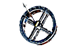
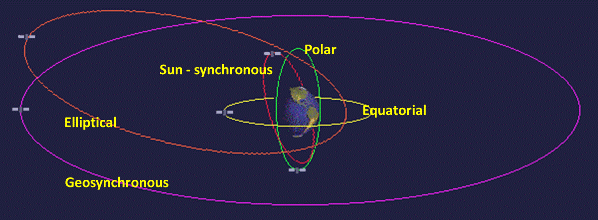
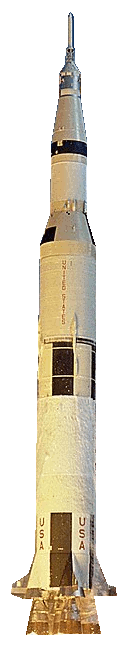

Space Stations
station transport


A space station is a spacecraft flying in orbit around the Earth. Although some space stations have flown autonomously for periods, they have all been designed to support personnel. No space station has been launched with personnel on board; personnel have therefore been transported to the stations on separate dedicated spacecraft.
With the exception of the U.S. Space Shuttle, all personnel spacecraft have been small with limited cargo capacity. This limits the duration that personnel can occupy the station. To enable longer duration stays specialized un-crewed cargo craft have been used to supply and re-supply the stations.
This page links to three following pages which give overviews and technical details of the various types of spacecraft and launch vehicles used with all stations flown so far.
Text in a paragraph hi-lighted in gold links to another rdata space article page and in white links to an external site. These links open in a new tab.
Space stations operate in Low Earth Orbit (LEO) of around 300 km to 400 km above the Earth's surface. A low Earth orbit requires the lowest amount of energy for station placement and is more accessible for personnel and cargo spacecraft. It also facilitates Earth observation from the stations.
The main disadvantage of LEO is that the stations experience orbital decay due to the drag of the Earth's atmosphere. Visiting spacecraft are therefore often used to boost the stations orbit and offset this decay.

Orbital spaceflight requires a spacecraft to be accelerated to very high velocity to overcome Earth's gravity. To reach orbit, the vehicle must have a vertical and horizontal component in its trajectory. The vertical component is to reach orbital altitude. The horizontal component is to reach a velocity to maintain orbit against atmospheric drag.
The main proven technique involves launching nearly vertically for a few kilometers while performing a gravity turn, and then progressively flattening the trajectory out at an altitude of 170+ km. The vehicle continues to accelerate on a horizontal trajectory (with the rocket angled upwards to fight gravity and maintain altitude) until orbital velocity is achieved.
Many different spacecraft have been used to build, operate and maintain the space stations. There are three main functions for station transport spacecraft:
Component Delivery - Placing station modules and structures into the required orbit.
Personnel Transport - Carrying personnel to the station and returning them safely to Earth.
Cargo Transport - Carrying supplies for life support, station operation and maintenance.

A Launch vehicle, launcher or carrier rocket is used to carry the spacecraft from the Earth's surface into a trajectory to reach an orbiting station. The spacecraft then uses its own rocket engines to rendezvous with the station.
The launch vehicle needs to have sufficient thrust to lift its own weight, mostly fuel, plus the weight of spacecraft and overcome Earth's gravity. To improve efficiency launch vehicles are generally designed with two or more stages:
* First (main) stage - Carries enough fuel to lift the vehicle and spacecraft to a specific altitude. This stage is then separated from the upper stages and destroyed or returned to Earth.
* Upper stages - Without the first stage the vehicle is lighter, which allows the upper stages to use smaller engines.
* Boosters - Booster rockets are sometimes used as an alternative to stages or to increase the overall thrust of the first stage. Boosters are self contained rocket engines, with their own fuel supplies, attached to the sides of the first stage. They are used together with the first stage to lift the vehicle to a specific altitude and are then discarded.
Using stages also has the advantage that different designs of rocket engines can be used for each stage. This is because the stages operate in different altitudes and the engines can be designed to suit the relevant densities of the atmosphere.
In the past all launch vehicles were designed for a single use (expendable) and all stages and boosters were destroyed by frictional heat on re-entry into the atmosphere.
The latest design for the first stage, and sometimes boosters, is to be capable of landing for re-use. This is done by leaving sufficient fuel in the tanks to re-start the engines, after spacecraft separation, to slow the vehicle for landing.
{kind=link}